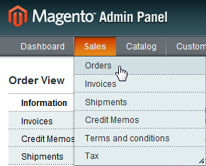
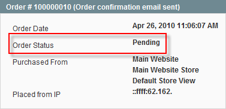
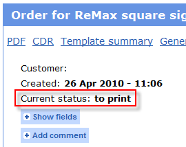
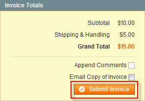
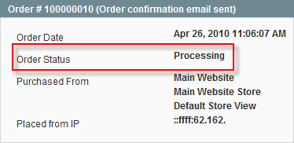
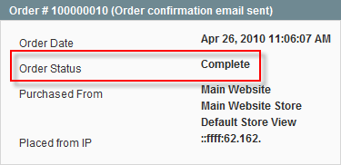
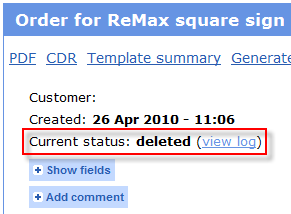
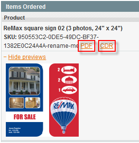

<?xml version="1.0" encoding="UTF-8"?><rss version="2.0"
	xmlns:content="http://purl.org/rss/1.0/modules/content/"
	xmlns:wfw="http://wellformedweb.org/CommentAPI/"
	xmlns:dc="http://purl.org/dc/elements/1.1/"
	xmlns:atom="http://www.w3.org/2005/Atom"
	xmlns:sy="http://purl.org/rss/1.0/modules/syndication/"
	xmlns:slash="http://purl.org/rss/1.0/modules/slash/"
	>

<channel>
	<title>Order management &#8211; Magento web-to-print &amp; dynamic imaging</title>
	<atom:link href="http://www.zetaprints.com/magentohelp/tag/order-management/feed/" rel="self" type="application/rss+xml" />
	<link>http://www.zetaprints.com/magentohelp</link>
	<description>Just another WordPress site</description>
	<lastBuildDate>Fri, 07 Jun 2013 06:55:21 +0000</lastBuildDate>
	<language>en-US</language>
	<sy:updatePeriod>hourly</sy:updatePeriod>
	<sy:updateFrequency>1</sy:updateFrequency>
	<generator>https://wordpress.org/?v=4.4.1</generator>
	<item>
		<title>Order status</title>
		<link>http://www.zetaprints.com/magentohelp/magento-order-status/</link>
		<pubDate>Thu, 29 Apr 2010 18:07:00 +0000</pubDate>
		<dc:creator><![CDATA[admin]]></dc:creator>
				<category><![CDATA[Web-to-print administration]]></category>
		<category><![CDATA[Order management]]></category>
		<category><![CDATA[Order status]]></category>

		<guid isPermaLink="false">/help/?p=9758</guid>
		<description><![CDATA[Web-to-print order status is synchronized between Magento and ZetaPrints in real time. All web-to-print orders placed by your customers are visible in your Magento admin panel. We recommend to manage them in Magento only. ZetaPrints status will change automatically. Navigate to Sales/Orders in your Magento admin panel to see the full list of orders placed [&#8230;]]]></description>
				<content:encoded><![CDATA[<p>Web-to-print order <a title="Web-to-print order status" href="../../../../help/order-status/" target="_self">status</a> is <a title="Magento web-to-print synchronization settings" href="../../../zetaprints-synchronization-settings/" target="_self">synchronized</a> between Magento and ZetaPrints in real time. <span id="more-9758"></span></p>
<p>All web-to-print <a title="Magento web-to-print order management" href="../../../magento-order-management/" target="_self">orders</a> placed by your customers are visible in your Magento admin panel. We recommend to manage them in Magento only. ZetaPrints status will change automatically.</p>
<div style="display: table;"></p>
<div style="position: relative; top: 35px; display: inline;">Navigate to <em>Sales/Orders</em> in your Magento admin panel to see the full list of orders placed by your customers.<br />
Open <a title="Web-to-print order details API" href="../../../../help/orders-api-order-details/" target="_self">order details</a> by clicking on the order in the list.</div>
</div>
<div style="display: table;"></p>
<div style="position: relative; top: 35px; display: inline;">Once a customer places an order in your store, the order status is set to <strong>Pending</strong>. This status will remain until you <strong>Confirm</strong> or <strong>Cancel</strong> the order.</div>
</div>
<div style="display: table;"></p>
<div style="position: relative; top: 35px; display: inline;">The status for the same order in your web-to-print site is <strong>to print</strong>.</div>
</div>
<h2>Confirm an order</h2>
<div style="display: table;"></p>
<div style="position: relative; top: 35px; display: inline;">
<p>Orders are confirmed by <em>Invoicing</em> the customer. After you have reviewed the <a title="Web-to-print output file generation" href="../../../../help/output-files-generation/" target="_self">generated</a> print-ready files, click on <strong>Invoice</strong> button in the top right corner of Magento&#8217;s <em>order details</em> page.</p>
<p>Review all information and click <strong>Submit Invoice</strong> button at the bottom of the page.</p>
</div>
</div>
<div style="display: table;">
<div style="position: relative; top: 35px; display: inline;">Order status is changed to <strong>Processing</strong>.</div>
</div>
<h3>Ship ordered items</h3>
<p>When you are ready to ship the items ordered, click on <strong>Ship</strong> button at the top of the order details page and confirm the shipment on the next page.</p>
<div style="display: table;">
<div style="position: relative; top: 35px; display: inline;">Order status is changed to <strong>Complete</strong> in the Magento admin panel.</div>
</div>
<div style="display: table;">
<div style="position: relative; top: 35px; display: inline;">The same order is <strong>Deleted</strong> from your web-to-print site.</div>
</div>
<h2>Cancel an order</h2>
<p>If you wish to cancel an order, navigate to the order details page and click <em>Cancel</em> button at the top. Order status will be changed to <strong>Canceled</strong> and the order will be deleted from your web-to-print site as well.</p>
]]></content:encoded>
			</item>
		<item>
		<title>Order management</title>
		<link>http://www.zetaprints.com/magentohelp/magento-order-management/</link>
		<pubDate>Wed, 28 Apr 2010 14:19:05 +0000</pubDate>
		<dc:creator><![CDATA[admin]]></dc:creator>
				<category><![CDATA[Web-to-print administration]]></category>
		<category><![CDATA[Order details]]></category>
		<category><![CDATA[Order management]]></category>

		<guid isPermaLink="false">/help/?p=9713</guid>
		<description><![CDATA[Web-to-print orders are managed directly inside Magento. Order details have user generated previews, links to proofs and the output files for web-to-print printing / publishing. Magento has all the customer and transactional data: customer details, order status, previews, proofs etc. There is no need to leave Magento and go to ZetaPrints for normal order management. [&#8230;]]]></description>
				<content:encoded><![CDATA[<p>Web-to-print orders are managed directly inside Magento. Order details   have user generated previews, links to proofs and the output files for   web-to-print printing / publishing.<span id="more-9713"></span></p>
<p>Magento has all the customer and transactional data: customer details, <a title="Magento web-to-print order status" href="../../../magento-order-status/" target="_self">order status</a>, previews, <a title="Web-to-print saved orders with PDF proof" href="../../../../help/saved-orders-with-pdf-proofs/" target="_self">proofs</a> etc. There is no need to leave Magento and go to ZetaPrints for normal order management.</p>
<div style="display: table;">
<p></p>
<div style="position: relative; top: 35px; display: inline;">
<p>Navigate to <em>Sales/Orders</em> in your Magento admin panel to see the full list of orders placed by your customers.</p>
<p>Open <a title="Web-to-print order details API" href="../../../../help/orders-api-order-details/" target="_self">order details</a> by clicking on the order in the list.</p>
</div>
<table style="margin-top: 10px; margin-bottom: 10px;" border="0">
<tbody>
<tr>
<td style="border: 2px dotted #aaaaaa;"><a href="../../../wp-content/uploads/2010/04/magento_web-to-print_order_details.png">View full size</a></td>
<td style="font-family: verdana; font-size: 10pt; color: #282828;">Order details page contains all important information about that order and the customer who placed it.</td>
</tr>
</tbody>
</table>
<div style="display: table;">
<p></p>
<div style="position: relative; top: 35px; display: inline;"><strong>Print-ready</strong> files <a title="Web-to-print output file generation" href="../../../../help/output-files-generation/" target="_self">generated</a> by the  system can be downloaded by clicking on the file extension in the <em>Items Ordered </em>section of the order details page.</div>
</div>
</div>
<h2>Customer file download</h2>
<p>You can <a title="Allow customers to download output files" href="../../../allow-file-download-in-magento/" target="_self">allow</a> customers to download specific <a title="Web-to-print  output file generation" href="../output-files-generation/" target="_self">output files</a> right after placing an order.</p>
]]></content:encoded>
			</item>
	</channel>
</rss>

<!-- Localized -->